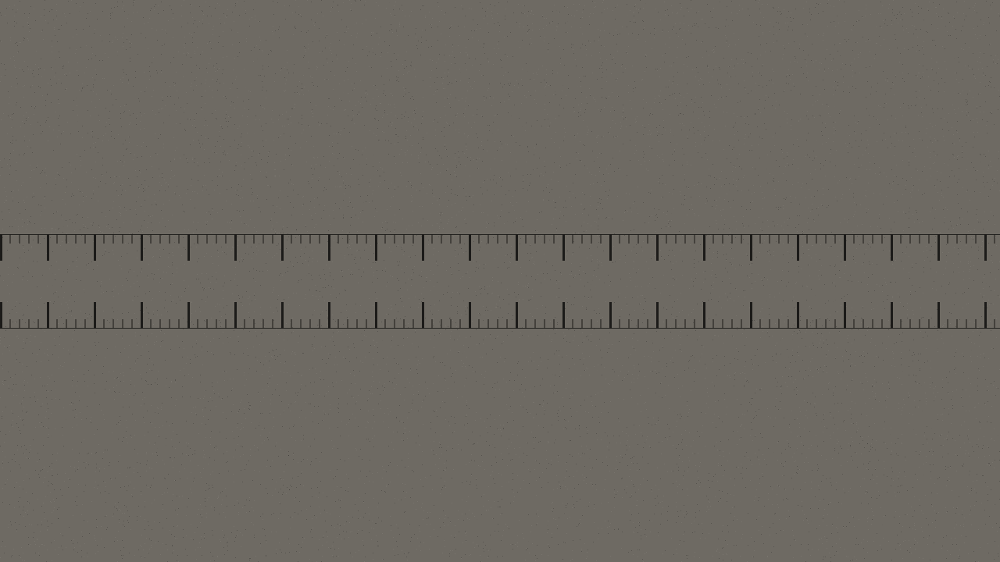

拆到游丝，一件一件摆
机械表每四到五年洗一次油。拆到游丝那一层，一百多个零件按顺序摆在工作台上，洗完再照原位装回去。快的不敢收，一天最多接两只。
油分三种：走时轮系用稀的，擒纵用稠的，发条盒里是膏状的。用错一种，表面上还能走，三个月后摆幅就掉下来。所以洗油这一步从不按"通用油"报价。
游丝变形了，只能换
表走得忽快忽慢，多半是游丝被撞过。游丝是整块表里最软的一件，弯过一次就回不去。换新的要按机芯型号对，对不上就订。
订件通常三到五天。订不到的情况也常见——1970 年代以前的机芯，很多型号早就停产了，只能从同批拆机件里找。找得到会先告诉你来源，找不到就直说找不到。
表耳宽度量到 0.1 毫米
表耳宽度差 0.5 毫米就装不进去。你带表来，我用卡尺量给你看，量完再报型号。皮带、钢带、编织带都能配，长度按你的手腕改。
量三个数：表耳宽（两个凸耳之间的净距）、表耳厚（弹簧棒到壳边）、表扣位的宽。三个数报给你，你自己在别处买带子也装得上，不必非在我这儿配。
石英表当场换，五分钟
换完要做一次防水测试，压进水里看有没有气泡。不测的换电池是把水汽关进表壳，半年后机芯就锈了。这项不收钱，含在电池里。
电池型号按机芯对：377、371、SR626SW 这几种最常见，也备着 321 和 364。换下来的旧电池给你带走，不留在店里——旧电池漏液是石英表最常见的死因之一。
对标准时间，写进单子
校完把日差写在你那张单子上，正负多少秒都说。三天后你再拿来对一次，看是不是按单子上的数在走。
机械表没有"零误差"这回事。位差（表面朝上和平放的走时差）通常比日差更大，所以单子上写两个数：面上位差和实际日差。测六个方位要留表一天。
壳子能抛，字面不碰
表壳可以抛光，划痕能淡一些。字面一律不碰——翻新过的字面在行家眼里就掉价了，我们不接这个活。玻璃裂了可以换，原装的留着给你。
抛光分两级：轻抛只去掉浮面的浅痕，壳型不变；重抛会把棱角磨圆，能救回深痕但轮廓会变。哪一级由你定，我先把两种做完的差别指给你看，再动手。

| 服务项 | 工期 | 说明 | 起价 |
|---|---|---|---|
| 洗油（手动上链） | 4–6 天 | 含拆装、清洗、三种油、校时 | ¥380 |
| 洗油（自动） | 5–7 天 | 多一组自动陀与换向轮 | ¥460 |
| 洗油（计时码表） | 7–10 天 | 导柱轮与归零锤单独清 | ¥780 |
| 换游丝 | 3–5 天 | 按机芯型号订件，订不到会直说 | ¥260 |
| 换摆轮总成 | 5–8 天 | 含游丝与摆夹板 | ¥420 |
| 配表带（皮） | 当场 | 量三个数后选带 | ¥90 |
| 配表带（钢） | 当场–2 天 | 需要截链或加节 | ¥150 |
| 换电池 | 5 分钟 | 含防水测试，旧电池带走 | ¥40 |
| 换表镜（矿物玻璃） | 1–2 天 | 原装镜留着给你 | ¥120 |
| 换表镜（蓝宝石） | 2–3 天 | 按壳型订，弧面另计 | ¥280 |
| 校时（六方位） | 留表一天 | 日差与位差两个数都写进单子 | ¥30 |
| 老表轻抛 | 3 天 | 只去浮面浅痕，壳型不变 | ¥220 |
| 老表重抛 | 7 天 | 能救深痕，棱角会磨圆 | ¥380 |
| 表壳除锈 | 5 天 | 锈蚀进到内圈的不接 | ¥260 |
| 换密封圈 | 1 天 | 含防水复测 | ¥60 |
| 检表（不出报告） | 当场 | 告诉你哪儿坏了，修不修随你 | — |
几种常见毛病，先自己对一遍
这几条是三十一年里问得最多的。对上了再拿来，能省你一趟路；对不上也拿来，我看见实物才敢说。
| 现象 | 最可能的原因 | 能不能自己弄 |
|---|---|---|
| 一天快慢超过两分钟 | 游丝粘连或受磁 | 受磁可以免费消磁，粘连要拆 |
| 走走停停，晃一下又走 | 发条断在末端，或擒纵叉沾了油泥 | 不能，拆开才知道是哪种 |
| 表面有水汽 | 密封圈老化，或后盖没拧到位 | 不能等，锈进去就要换件 |
| 上满弦走不到一天 | 发条疲劳，或自动陀轴承磨损 | 不能，要测落弓曲线 |
| 表冠拔不出来 | 拉档或柄轴变形 | 千万不要用力，容易断在机芯里 |
| 计时按钮按下去不回 | 归零锤弹簧疲劳 | 不能，属计时模块 |
| 秒针原地抖不走 | 石英机芯步进马达卡住，或电池将尽 | 先换电池，换完仍抖就要换马达 |
| 表面朝上准、平放就快 | 位差偏大，需要调校 | 不是故障，是机械表的常态 |
这张单子上你会看到什么
每一次修都开一张单子，写完复印一份给你带走。单子上固定这七栏——不是为了记账好看，是为了三个月后你回来问"上次那个数是多少"的时候，我还有东西可以对。
- 表主与联系方式 名字、电话，写在单子右上角。表留在店里的时候，这张纸是它唯一的身份证明。
- 品牌、型号、机芯号 机芯号刻在摆轮下方的夹板上，有些要拆后盖才看得见。拆盖前会先问你一声。
- 外观描述 壳面有几道划痕、表镜哪个位置有磕、表耳背面有没有换过带子留下的压痕。写得啰嗦是为了拿表时不扯皮。
- 你说的毛病 原话照记，不替你总结成"走时不稳"。你说"早上戴上是准的，晚上摘下来放桌上一夜就快四分钟"，这跟"走时不准"是两件事。
- 我量到的数 摆幅、快慢、位差、防水测试结果。测表仪打出来的纸带原件贴在单子背面，不抄数字。
- 报价与工期 拆开看见真问题之后才报价。报价之前不动手；报价之后你觉得贵，我原样装回去，不收拆装费。
- 取表签字 你签字的那一栏旁边留一条空白，写保期。手洗油保一年，换件保半年，进水与摔过不在保内。
这条留白是有原因的：三十一年里见过太多"修完说不清"的争执。一张写满的纸比一张嘴管用，对你也对我。
上周的一只表
说一件具体的，比讲一堆规矩有用。
- 拿来时
- 一块 1968 年的手动上链，壳面划痕密，表镜右下角有个米粒大的磕。表主说"走得慢，一天慢十分钟以上"。
- 先量
- 面上位差 −412 秒／天，平放 −380 秒／天。摆幅 148°（正常应在 270–310°）。落弓曲线掉得很快——发条一上紧就走得动，走了六小时开始拖。
- 拆开看见
- 不是发条，是擒纵叉的两个叉瓦松了一个。油泥把叉瓦粘在叉座上，擒纵每次锁不住，能量漏在这里。这个位置平时不会有人怀疑，因为症状和"发条疲劳"一模一样。
- 怎么处理
- 重新粘叉瓦、整机洗油、换了密封圈。没换游丝也没换摆轮——虽然按"一天慢十分钟"这个描述，很多人会直接报这两项。
- 修完的量
- 面上 −8 秒／天，平放 −4 秒／天，摆幅 286°。位差 4 秒，对手动上链的老机芯算好。
- 花了多少
- 洗油 ¥380 + 叉瓦处理 ¥120 + 密封圈 ¥60，合计 ¥560。当初如果按"换游丝 + 换摆轮"报，会到 ¥940，而且换完仍然慢——因为问题不在那两件。
写这一段不是为了显得会修。是想说清楚：**先量再报价，比先报价再想办法，对你是省钱的那一头。**
留表之前，把这五条看完
不留没拆过的表过夜
表留下来却没开盖，我第二天不一定有空。所以要么当场开盖给你看，要么你先带回去，等我说"明天能动手了"再拿来。压一天不算什么，压一个月我在心里过不去。
报价之前不动手
拆开、看清、报数、等你点头，这四步走完才开始修。你觉得贵可以不修，我原样装回去，不收拆装费。这条三十一年没变过。
进水与摔过先说
进过水的表和摔过的表，内部可能有看不见的锈与变形。这类我会在单子上单独标一行——不是免责，是让你知道"修完可能还有别的毛病"这件事在什么时候成立。
零件换下来的都给你
游丝、摆轮、表镜、旧电池，换下来的一律装进小袋一起带走。留在店里我也不会再用，但你有权拿走——这一条不需要你开口。
修不了就说修不了
有些机芯的零件确实找不到了，有些锈蚀已经吃穿了夹板。这两种情况我不接，也不建议你去"再找人试试"——试一次要再拆一次，对老表是伤害。
这五条没有一条是行业惯例，都是三十一年里一件一件撞出来的。哪条你觉得不讲理，当面跟我说，能改的改。
关于那几个起价
表里写「起价」两个字是认真的，不是口头客气。为什么只能给起价，说清楚三件事你就明白：
- 同一项服务，机芯不一样 手动上链的洗油和计时码表的洗油，零件数差三倍。前者两小时能完，后者要拆到导柱轮那一层，一天只做一只。笼统报一个数，对做码表的人不公平，对做手动的也不诚实。
- 拆开才知道要不要加件 洗油的过程中常常发现叉瓦松了、夹板有裂纹、自动陀轴承旷。这些不拆开看不出来，看见了又不能不说。所以报价分两次：一次是拆开前的估价，一次是拆开后的准价。
- 老表的件是订的，价格跟着件走 1970 年代以前的机芯，同型号的游丝在不同渠道能差三倍价。我能做的是把订件渠道和价格一起告诉你，你决定要不要订。
另外说一件事：店里的检测和报价都不收钱。有人拿着表来问了三趟才修，那三趟也都不收。这不是促销，是因为"问清楚"本来就该免费——你不问清楚，我心里也不踏实。
还有一条常被问到的：能不能只换件不洗油。可以，但你得知道后果——旧油和新件混在一起，新件磨得比正常快。这种情况我会在单子上写一行"未洗油，仅换件，保期减半"，你签了字我再动手。
来之前可以先打个电话
城南巷口 17 号。巷子从老街的邮局往里走，第三个门面，门口有一块磨得快看不见的木牌。导航搜"林记修表"能到，但巷子窄，车开不进来，停在外面路口走两步。
上午十点到晚上七点，周一周二歇。夏天有时候会早关半小时，来之前打个电话最稳。电话打不通多半是手上有活，过十分钟再打。
带表就行。如果还留着原来的盒子、说明书、拆下来的旧件，一并带来，有时候能从盒子上看出年份。修过的表把上次那张单子带上，有那张纸能省掉一半的复述。
当场能做的：换电池、配表带、校时、检表、消磁。要留表的：洗油四到十天，换件看订件，抛光三到七天。留表都会给一张单子，单子上写着预计取表日。